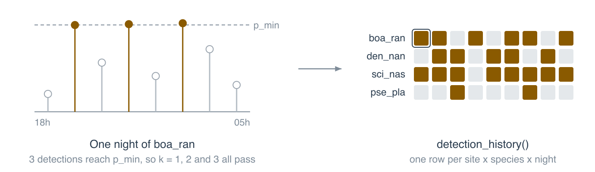
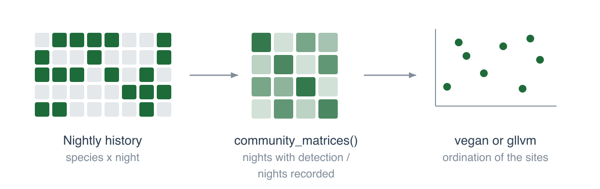
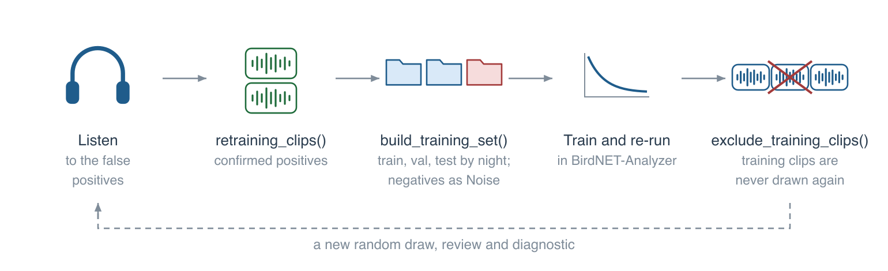

Choose a design
Each design answers a different question, so a sample drawn for one is not valid for another.
sampling_mode use "top"retraining; score-to-probability calibration "random_detections"false-positive rates; needs threshold "random_recordings"false-positive and false-negative rates "score_bands"thresholds and calibration across the score range; not for false-positive rates
Draw and cut the clips
# check the selection first, then cut
extract_validation_clips(data_dir, "validation",
sampling_mode = "random_detections",
threshold = 0.5, simulate = TRUE)
extract_validation_clips(data_dir, "validation",
sampling_mode = "random_detections",
threshold = 0.5)The clips and clip_manifest.csv go to the output folder. To work step by step: read_selection_tables(), select_clips(), cut_clips().
Review
run_app("validation/clip_manifest.csv",
clips_dir = "validation/clips",
verdicts_file = "validation/verdicts.csv",
reviewer = "liliana")
Or sort the clips in the BirdNET GUI and use review_dir below.
Several reviewers
assign_reviewers() splits the clips, with a share for both. reviewer_agreement() measures their agreement, and consensus_verdicts() combines the verdicts.
After the review
post_validation(
manifest_path = "validation/clip_manifest.csv",
output_dir = "validation/results",
verdicts_file = "validation/verdicts.csv")
Writes validation_by_clip.csv, the precision by bin, the thresholds, the nightly presence and the clips for retraining.
What each label of review_support() asks for
label next step "reached" the cell has a threshold "review more" another round, below "not reviewed" draw clips for the cell "exhausted" keep the clips; the model may still give a threshold "unreliable" the classifier is the limit: retraining
Another round
select_clips(previous = ) leaves out what was reviewed, and combine_rounds() gives every clip its cumulative inclusion_prob.
Figures based on drawings by Larissa S. M. Sugai. 1 of 3
Why calibrate
A score is not a probability. The scores of true and false detections overlap, and no cut on the score separates them. The curves are illustrative.
From clips to P(tp)
res <- calibrate(
validation_files = val_files,
prediction_tables = tables,
output_dir = "calibration", p_min = 0.95)
Writes nightly_detection_history.csv and calibration_quality.csv. Look at status before using a species.
Choose a route
route a detection counts when uncertainty A score ≥ the threshold of the cell none B · 1 P(tp) ≥ p_min ignored B · 2 pr_reliable ≥ prob_minused in the cut B · 3 P(tp) ≥ p_min in each draw propagated
A guarantees the precision of the set kept; B, of each detection, if the curve is right. Ways 2 and 3 need a brms calibration.
From detections to nights

A night counts as detected with at least k detections that count (min_detections_night; columns for k = 1, 2 and 3).
Code per route
# A: empirical threshold
val_clips <- read_validation_tables(val_files)
thr_A <- review_support(val_clips, pred,
target_precision = 0.90)
history_A <- threshold_history(pred, thr_A)
# B, way 1
history_1 <- res$history
# B, ways 2 and 3, after calibrate(engine = "brms")
history_2 <- detection_history(res_b$scored,
p_min = 0.95, rule = "probability",
prob_min = 0.9)
history_3 <- history_draws(res_b$fit, res_b$scored,
p_min = 0.95, n_draws = 200)One history per draw
Check one route against the other
compare_thresholds(val_clips, res$fit,
scored = res$scored, target_precision = 0.90,
quality = res$quality)
Figures based on drawings by Larissa S. M. Sugai. 2 of 3
Community matrices

status <- cell_status(res$fit,
read_validations(val_files), p_min = 0.95)
core <- suggest_core_species(status)
mats <- community_matrices(history_1,
core_species = core)
mats_3 <- community_matrices_draws(history_3,
core_species = core)
The final choice of core species is yours. In route A it is manual, as cell_status() needs a calibration. build_community_matrices() does the same from the history file.
Occupancy with false positives
export_occupancy_data("occupancy", det,
recordings = "recordings.csv",
validation = val_files)
Writes every occasion, the scores and the reviewed clips, with their design, for models such as those of crywolf. fit adds the posterior draws of a Bayesian calibration.
The review must come from "random_detections", which anchors the false-positive rate, and/or "random_recordings", which anchors the state of sites and shows what the classifier misses.
Use a calibration without a site effect: P(tp | score, site) partly reflects how often the species calls at the site, which is what occupancy estimates, so it would be counted twice.
An occasion, from the scores
Retraining

For when the classifier, and not the review, limits precision. retraining_clips() lists the positive clips; training itself runs in BirdNET-Analyzer.
build_training_set(reviewed, "birdnet_training",
split = "night", test_prop = 0.2)
After retraining, the scores change, so validate and calibrate again.
Two stories for every site
Where the groups overlap, the data alone cannot say how many detections are false: known truth settles that.
Figures based on drawings by Larissa S. M. Sugai. 3 of 3